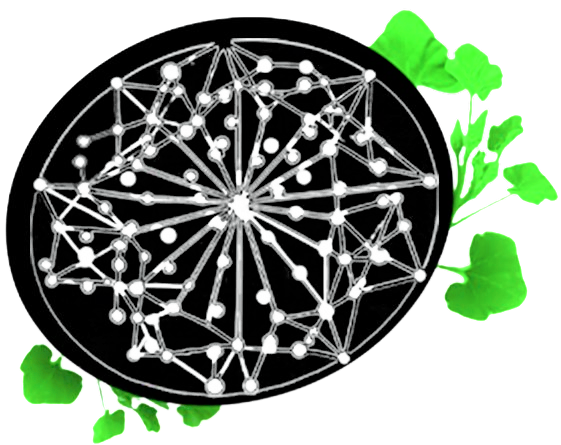

By accessing FiaOS Biome research platform, you acknowledge and agree to our Terms of Service, Privacy Policy, and Data Usage Policy. This platform uses cookies and local storage for essential functionality.
